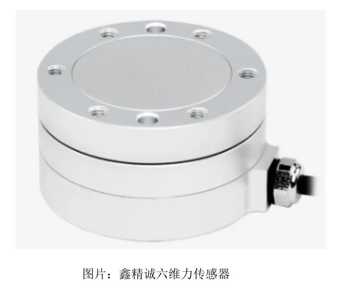

PaXini — Profile
The tactile-sensing unicorn and its DexH hands.
In 2018 touch sensors were China's #4 "bottleneck" technology — 90% imported at over $14,000 each. Eight years later they are 100% domestic and prices start at $28. Here is who leads.

Force and touch are the senses a robot needs before it can safely shake hands, pour a cup or massage a person. In 2018, touch sensors sat at #4 on China's official list of 35 "bottleneck" technologies — over 90% imported, with a single unit costing more than $14,000. By 2026 the same class of product is 100% domestically made and priced from ~$28, and Chinese firms now dominate the market.
Force/torque sensors (six-axis) measure push and twist at wrists, ankles and feet — the "how hard" of motion control. Tactile sensors are thin, flexible skins for fingertips, palms and feet — the "where and how much" of contact. Together they are the essential hardware for humanoid mass deployment, a point underlined at the 2026 World Humanoid Robot Games, where force sensing became a judging standard.
| Company | Blue Dot (蓝点触控) | Kunwei (坤维科技) | Sunrise (宇立仪器) |
|---|---|---|---|
| Role | #1 in humanoid six-axis force (~73% share, 2025 H1-3) | #1 in China smart-robot force sensing (~53%) | #1 domestic brand in full market (~15.6%) |
| Edge | Ships with AgiBot, Xiaomi, XPeng, UBTECH new models | HRS wrist/ankle series, 10mm thin; games' exclusive force partner | Auto-crash-test tech, ISO17025 lab |
Xinjingcheng (鑫精诚) pushes miniaturization with 6.5mm and 9.5mm fingertip sensors, while Stark Sensor (星汇) challenges the 6mm barrier. What was a foreign monopoly five years ago is now a domestic fight over millimeters.
PaXini (帕西尼) is the flagship story. Founded in Shenzhen by Xu Jincheng, a Waseda PhD, it went from first commercial high-precision array tactile sensor to a B-round valued above RMB 10 billion (~$1.4B). It now ships the world's first foot-sole tactile sensor (PX-FOOTRIX), a self-developed 6D tactile chip (GEN4 FUSE), and the TORA-ONE humanoid with DexH hands — claiming the #1 global share in flexible tactile sensing. Hanwei/New Degree (汉威/能斯达) is the A-share's only flexible-tactile mass-production platform, and with Zhuoyide launched the world's first capacitive full-body e-skin. Tashan (他山) is backed by Joyson Electronics' orders and an NVIDIA ecosystem tie.
State funding of ~RMB 3 billion since the 14th Five-Year Plan, plus engineers returning from abroad, flipped the sector. Chinese six-axis force makers now exceed 80% of domestic share, and tactile pricing fell from six figures to double digits. The same arc — "foreign monopoly turned Chinese commodity" — now applies to touch, the last major sense.
The tactile-sensing unicorn and its DexH hands.
The A-share flexible-tactile mass-production platform.
The hands these sensors give the sense of touch.
The motors driving every finger alongside these sensors.
Company profiles, product pages and supplier analysis for China's robotics ecosystem.